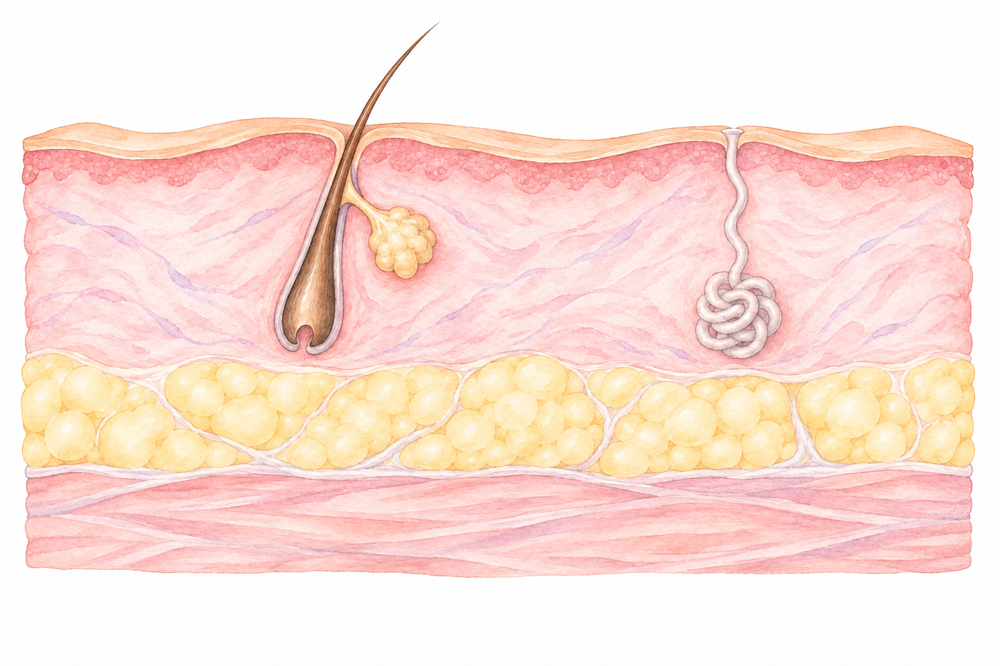
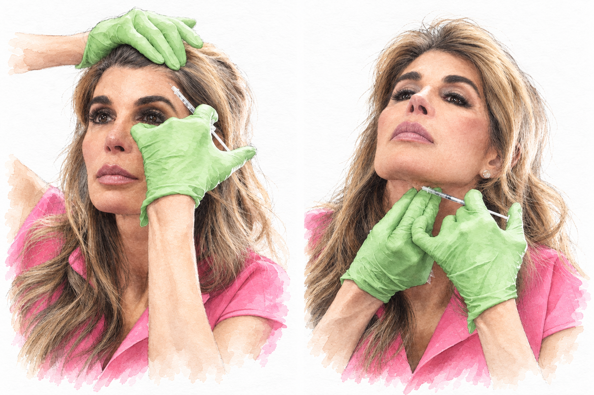

A nerve sends a signal. A muscle pulls. A face moves.
You smile. You squint. You raise a brow. The muscles beneath your skin make those movements happen. Neuromodulators temporarily soften selected muscle activity, which can soften the lines that appear when you move.
Raise your eyebrows. See how your forehead folds? That is the muscle underneath pulling on your skin. It starts with a tiny message from a nerve. The messenger is called acetylcholine—or ACh. Its job is simple: tell the muscle to move.
Think of treatment as turning down the message. Botulinum toxin type A acts inside the nerve ending, on a protein called SNAP-25 that helps release ACh. Less ACh reaches the muscle, so the muscle gets less stimulation. The effect is temporary.
02 / The musclesAn illustrated anatomy study
The face beneath the face.
Think of the face you make in bright sunlight. Or when you concentrate. Or when you smile at someone you love. Muscles make each movement possible. Tap a name to see its job.
A closer look
Follow the arrows to see the movement.
Choose a muscle to see its job
Never underestimate the power of tiny tox.
Small muscles. Different jobs.
01 / The drawstring
More pink, or less lift?
Think of orbicularis oris—the muscle around your mouth—as a drawstring purse. It helps close and pucker the lips. A lip flip can soften part of that pull so a little more pink shows, without adding filler volume.
A gummy smile is a different question: how high does the upper lip rise? Selected lip-lifting muscles may be softened when excess lift is the cause. Teeth, gums and jaw structure matter, too.
02 / The balance
Upward. Downward.
The zygomaticus major helps lift a smile up and out. The depressor anguli oris, or DAO, pulls a mouth corner down. When downward pull is the concern, easing it may let the upward pull show more.
A corner can look less downturned without your mood changing. I look at the balance, not just one muscle in isolation.
03 / The little scrunch
The nose moves, too.
Bunny lines appear when you scrunch. Alar flare is the outward movement of the nostril edges. These are different movements, involving small neighboring muscles.
For some faces, softening that movement changes how the nose looks in expression. It does not shrink the bone or cartilage.
These cosmetic uses are off-label. Small adjustments can still cause unwanted weakness or asymmetry, including changes in sipping, speaking or other mouth movements.
03 / ExpressionsThe face in motion
Expression is movement.
A smile lifts your cheeks. A squint gathers the skin beside your eyes. A raised brow moves your forehead. Choose a drawing and notice what changes.
04 / MicroexpressionsA movement, briefly seen
Here. Then gone.
Have you ever caught a flicker of movement across someone’s face? A microexpression is a facial expression that lasts only a fraction of a second. “Micro” is about how briefly it appears, not the size of a wrinkle.
A quick brow lift can catch your eye, but it cannot tell you exactly what someone feels—or whether they are telling the truth. The moment around it matters. So does asking the person.
Notice the movement. Leave room for meaning.
Press play. Watch the brow on your right.
Illustrated demonstration using two poses, not a recording or a test of emotion. The brief replay holds the changed pose for 200 milliseconds.
05 / Treatment areasLocation is only the beginning
Where might it be used?
Start with what you notice: the lines when you squint, the crease when you frown, the chin that dimples. Explore the movement behind each concern. I look at your face in motion, then we talk about what you want to change—and what you love as it is.
Shaded regions identify the area being discussed. They are not injection points or a personal treatment plan.
Approval depends on the medicine and the area. Some uses are off-label. Dr. Petro will explain the product, the purpose and what is off-label.
What does “off-label” mean?
A medicine can be approved while a particular use is not. Many of the smaller face treatments here are off-label: FDA has not established safety and effectiveness for that specific use. I will explain why I am considering it, the alternatives and the risks for your face.
The mixture matters
Amount. Concentration. Volume.
They are connected, but they are not the same thing. Adding saline changes the concentration. The dose is the medicine delivered, measured in units for that product. The amount of liquid can affect how the local effect spreads. I consider these together with your anatomy and the movement we want to preserve.
More liquid does not automatically mean less medicine. Units cannot be converted from one neuromodulator to another by a universal formula.
06 / MicrotoxSkin quality, with Dr. Petro
Let’s talk about that glow.
I think the potential of Microtox is underappreciated. Sometimes the conversation is about the skin itself: the look of pores, oiliness, texture or redness. That fresh, light-reflecting finish people call Korean “glass skin.” I love that look. The approach depends on your skin.

Skin surfaceDermis & glandsFatMuscle
Skin quality and muscle movement are different treatment goals. Simplified tissue layers, not to scale; this is not a delivery or injection guide.
The skin
Microtox / Microbotox
In my practice, this conversation includes tiny, superficial injections and microinfusion approaches such as AquaGold. I have also used a “topper” after SkinPen—what I think of as frosting over freshly made microchannels—as an adjunct to a skin treatment.
These are different delivery methods. A product placed on the surface does not behave the same way as one injected into skin.
The movement
Tiny Tox / “Baby Botox”
Here, I am using small adjustments to soften selected muscle movement. It is still a neuromodulator, with the same need to respect anatomy. Small does not automatically mean subtle—or risk-free. The goal is a result that fits your face.
A personal combination
What is in the “cocktail”?
Depending on your skin, I may discuss hyaluronic acid, vitamin C or PDRN alongside a neuromodulator. PDRN is often talked about online as “salmon sperm”; that nickname does not identify the actual product, formulation or route.
Each ingredient and combination needs its own review. They are not interchangeable, and there is no one mixture for every face.
The skin conversation
Pores. Redness. Texture.
Acne, redness and rosacea come up in these conversations, too. Small studies suggest some skin-quality benefits, but the evidence varies by concern and delivery method. Acne scars, active acne and rosacea are different problems.
We will talk about what is established for your concern and where Microtox is still emerging. “Glass skin” describes a look, not a guaranteed outcome.
How long?
Think temporary.
I often describe the aim as roughly a three-month window. That is an estimate, not a promise. Skin-directed treatment, different ingredients and different delivery methods do not all have the same duration as muscle treatment.
We reassess your skin and how it responds, rather than assuming the same calendar fits everyone.
What I want you to know
These skin uses of neuromodulators are off-label. SkinPen’s FDA clearance does not cover delivering Botox, PDRN, vitamins or other products into the skin. An unapproved product is different from an approved medicine used off-label; we need to identify the exact products and their status. Evidence for these combinations is limited. Product suitability, infection, irritation and unwanted muscle weakness all belong in our discussion.
A little Petro perspective
That “I’ve been drinking liters of water” look. Even on a loaded-tea kind of day.
A look I love—not a substitute for hydration.
07 / Your patternA moving face deserves a moving assessment
There is no universal pattern.
No two foreheads are the same. To me, the forehead is one of the most misunderstood parts of the face. I love watching people talk. That is when I see the little lifts, the asymmetry, the quirky movements that decorate someone’s face. Some of those movements are exactly what I want to preserve.
Arrows show an example of movement emphasis. These are simplified observation patterns, not diagnostic categories or injection maps.

Two treatment moments, painted from photographs shared by Dr. Petro.
Look again. Every time.
I love the variety in this work. The last thing I want is to get into a rut and repeat a pattern simply because we used it before. Sometimes the plan stays the same. But I want to look at you again, watch you talk again, and decide with you.
It is not all or none. Small movements help make you recognizable. Anatomy, the amount used and how the medicine reaches the intended muscle all matter. Depth matters because the forehead has layers, and the medicine needs to reach the nerve endings that signal the intended muscle. A smooth forehead is only one part of a moving face.
Try watching a conversation
Does the movement support the story?
When I watch the news, I notice when facial movement draws my attention away from what they are saying. We cannot know from a screen what treatment someone has had. But we can notice the balance between expression and distraction. That is a useful way to understand what I am looking for in a consultation.
The question Dr. Petro asks with you
What would we soften? What makes you you?
Some things just need to be. We do not have to erase every movement.
08 / SweatingAnother kind of nerve message
The Petro Dry Cleaners idea, reimagined in watercolor.
The “Petro Dry Cleaners” story.
My white shirts kept turning yellow. The dry cleaners told me it was sweat—but I never felt like I was sweating. I joked that I was going to open Petro Dry Cleaners. It turns out you do not have to feel drenched for sweat to be part of the story.
A sweat gland receives nerve messages, too. This original drawing explains the idea; it is not an injection map or a cross-section to scale.
Same messenger. Different destination.
Turn down the sweat signal.
Acetylcholine does more than tell muscles to move. It also tells certain sweat glands to release sweat. Neuromodulators can temporarily reduce that signal in a treated area.
Underarms / axillae
For severe underarm sweating that topical treatments have not managed, Botox® has an approved use in adults. That approval belongs to that product and situation; it does not extend to every neuromodulator.
Scalp / head sweat
I have also treated people bothered by a lot of scalp sweating. This is off-label, with less research behind it. We first talk about where you sweat, how it affects your day and what may be causing it.
Sweating helps cool your body. More sweat does not mean more fat burned, and reducing excess sweating is not a weight-loss treatment.
Your conversation with Dr. PetroMelanie Petro, MD · Facial Plastic Surgeon
Your face. Our conversation.
Tell me what you notice and what you want to keep. We will talk about the product, the movement we might change, and when I want to see you again. I want to understand your face beyond one photograph of a smooth forehead.
From Dr. Petro’s notebook +
Melanie Petro, MD · Facial Plastic Surgeon
“Watching people talk is essential to mapping their face.”
This masterclass grows from my explanations, personal stories and the way I look at movement. The drawstring purse. The upward and downward pull of a smile. The white shirts. The expressions that make you look like yourself.
The drawings were created for this Petro masterclass, using an artistic likeness of me. Muscle shapes and layers are simplified so we can talk about their jobs. Every real face has its own anatomy.
Educational illustrations, not photographs of treatment results. Botox®, Dysport®, Xeomin® and Jeuveau® are registered trademarks of their respective owners.